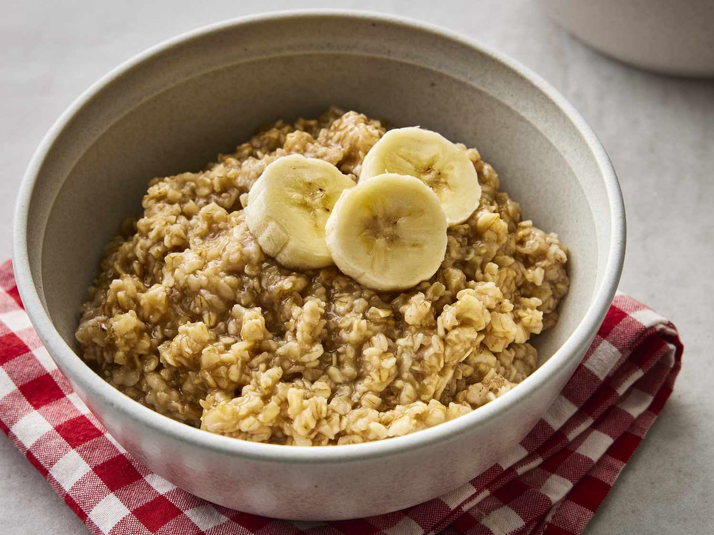

Lemmikretsept: Puder

| Ingredient |
Amount |
| Rolled oats |
100 g |
| Water or milk |
250 ml |
| Salt (optional) |
2 g |
| Cinnamon |
2 g |
| Bannanas |
100 g |
- Step 1 Boil the liquid: In a pot, bring 250 ml of water or milk to a boil.
- Step 2 Add oats: Stir in 100 g of rolled oats and 2 g of salt (optional).
- Step 3 Cook: Reduce heat to low and simmer for 5–10 minutes, stirring occasionally until the oats are soft and thickened.
- Step 4 Add cinnamon: Stir in 2 g of cinnamon.
- Step 5 Top with bananas: Slice 100 g of bananas and place them on top of the cooked oatmeal.
- Step 6 Serve: Enjoy!